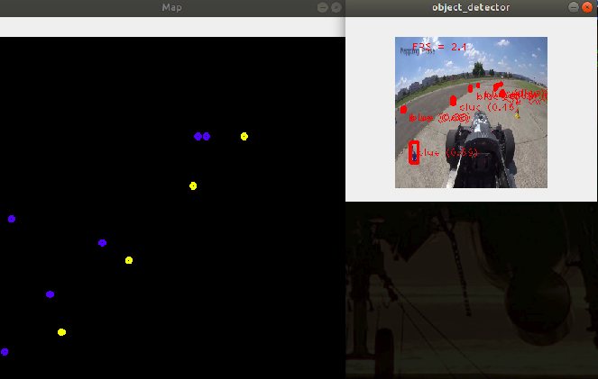

|
Mentors
Contributor:
Introduction
The project endeavours to build a landmark detection framework to detect course markers enabling
an autonomous vehicle find an optimal trajectory to complete a circuit. This work will aid in
the controller that will be used to navigate a closed course in minimal time. We use the
EfficientDet family of object detectors for detection of the landmarks. The model will be
deployed on a Raspberry Pi and accelerated using a Coral USB
accelarator after conversion to the tflite format.
Blog
Why we chose the EfficientDet family of models and which compound scaling coefficient you should
choose
"Data! Data! Data! I can't make bricks without clay" - Sir Arthur Conan Doyle. What he and I
both need and can't get enough of
Setting up your environment and installing tensorflow a.k.a the need for military
precision in resolving dependency conflicts

Just press play. A jupyter notebook run in Google Colab is pure joy :) How a Jupyter Notebook
will make it easier for you to test and tune your model quickly
How to determine which EfficientDet model is best suited to run with limited computational
resources and specified accuracy constraints

Staying on track - Mapping landmarks of known geometry using detections from a monocular camera
and visualizing them in the BEV frame
|